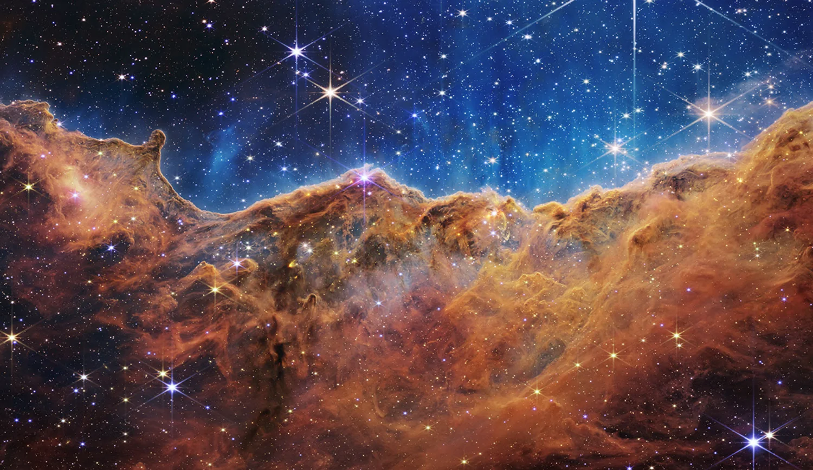

The problem
Space missions are trade-offs: power against mass, data against bandwidth, ambition against propellant. Most people never see those trade-offs. They only see the pictures that come back.
NASA Space Apps Challenge 2026
The Mission Collective
Four frontiers. One NEXUS.
Your mission is to bring back evidence.
Solar System illustration. Planet sizes and distances are adjusted for readability. Select a mission world to preview it.
Earth illustration using NASA Blue Marble and Black Marble maps.
How it works
Mission control (VEGA) explains the target and what counts as success.
Pick arrays, battery, radio, recorder, instruments, propellant and rocket. Live checks show what will break.
Poll every station: go or no-go. Overload the rocket and it can fail. Too little propellant and you fly straight past your target.
Survive eclipses, juggle a full recorder and beat the clock on master alarms. Every blackout damages the spacecraft. Too much damage and you lose it.
Success or failure, a grade, a mission patch, real NASA comparisons, achievements and discoveries for your archive.
The physics underneath
T = 2π √(a³/μ) orbital periodasin(R/a)/π eclipse fraction for a circular orbit crossing the center of the shadowP = rating × 0.8 ÷ d² solar-array power model with distance in AUΔv = Isp g₀ ln(m_wet/m_dry) ideal change in velocity from a burnD = rate × 0.8 × contact time downlinked data with 80% efficiency
See where stars form, bend light around a galaxy, and travel from Earth to the edge of the observable universe.
Explore the universeDiscovery archive
Finish objectives to unlock real findings from NASA missions. Progress is saved in this browser only.
For judges
Space missions are trade-offs: power against mass, data against bandwidth, ambition against propellant. Most people never see those trade-offs. They only see the pictures that come back.
A browser game where you make those trade-offs yourself on four real targets: asteroid Apophis, the Moon's south pole, Earth's atmosphere and Jezero crater on Mars. The simulation uses standard orbital, power and link formulas, and shows the maths.
Mission facts, instruments and reference values come from NASA, JPL, USGS, NOAA and instrument-team pages. Earth's coastlines come from Natural Earth. Every source is listed on the sources page.
Values are labelled. NASA fact means published. Team means our research documents. Conceptual means chosen for gameplay. Earth, Moon and Mars use real global maps; Apophis is illustrative because no close-up map exists yet. ASTRA's early arrival at Apophis is a "what if". Launch odds and spacecraft faults are game mechanics, modelled on the kinds of failure real missions face.
Website planning Apophis digital twin and flyby views
Website planning Lunar terrain explorer and instrument cards
Lead website development Mission gameplay, 3D spacecraft, Cosmic Explorer and deployment
Website planning Jezero explorer and orbit dashboard